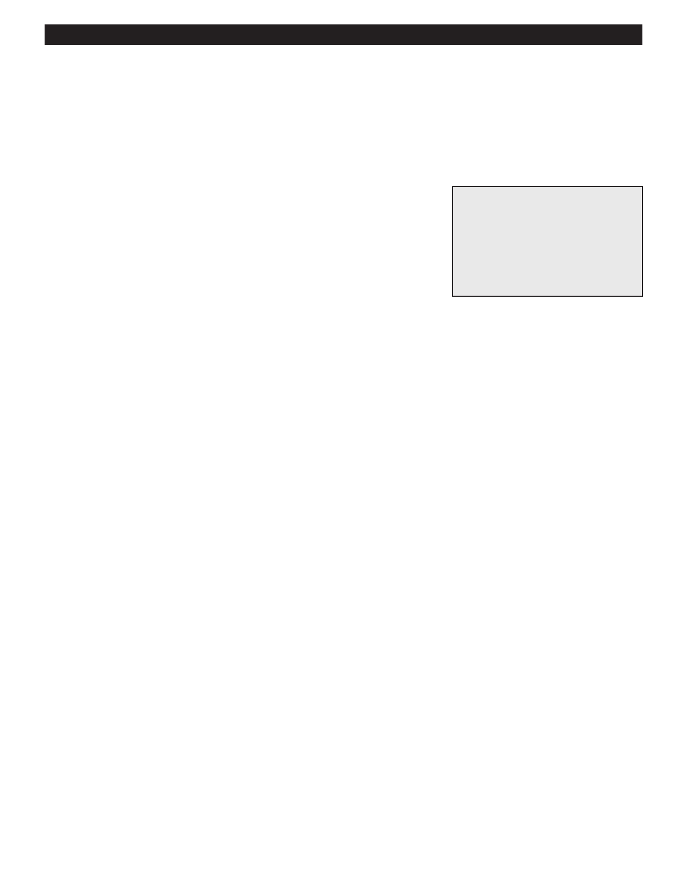

PA RT I C I PA N T R E S O U R C E G U I D E
Diagnose and Replace a Baseboard Heater Thermostat
Baseboard heaters are often hard-wired to the thermostat for the entire apartment. But
if they’re not—and the heater isn’t performing up to snuff— you may need to replace the
heater’s thermostat.
Safety
Tools and Materials Needed
Make sure the power to the heater is off.
Lockout/tagout device
Use lockout/tagout procedures.
Screwdriver or special tool to
Wear eye protection.
open the terminal unit
Multimeter
Replacement thermostat
How-to Steps
1. Turn off the power at the main service panel.
2. Lock and tag out the service panel.
3. Disconnect the thermostat and its wiring from the housing.
4. Test the thermostat for continuity.
a. Set the multimeter to R x 1.
b. Touch a probe of the multimeter to each terminal.
c. Check the reading. It should be zero, or close to it. If not, the thermostat is not working and needs to be replaced.
5. If the thermostat is faulty, replace it with one that is exactly the same.
6. Reassemble the heater housing.
7. Test the unit.
Notes:
30